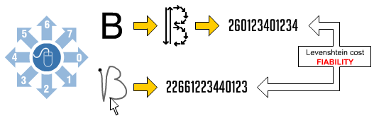
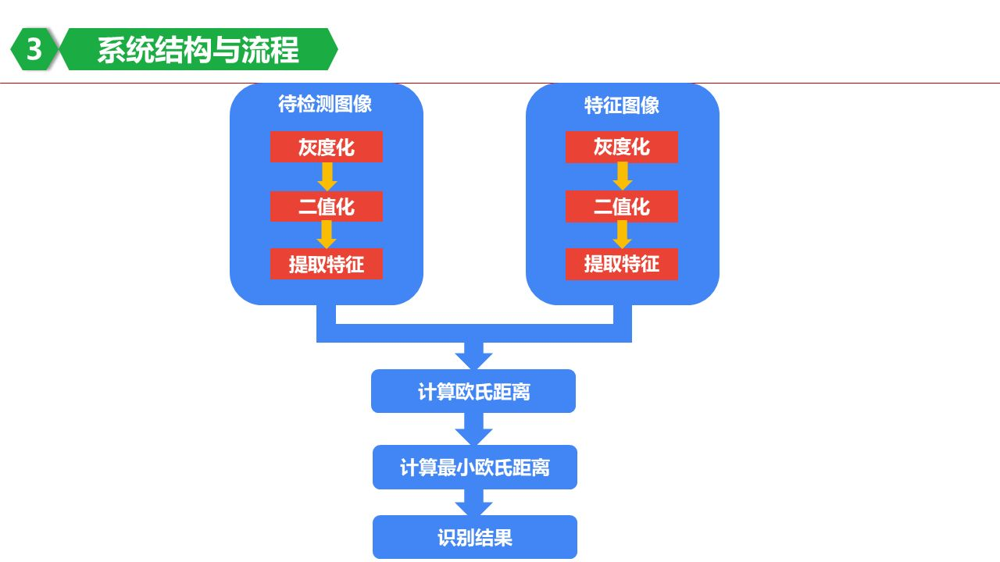
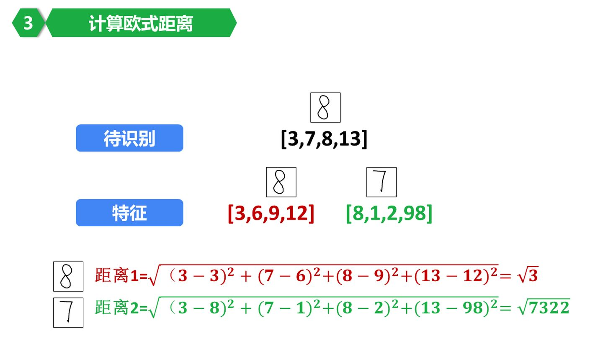

ocr
光学字符识别（ optical character recognition 简称OCR）技术目前已经十分成熟，并且涉及到的大量图像处理、数学知识太过复杂，
这里只针对简单业务场景下的数字或者字母（涉及样本数量较少）识别，介绍一些简单但是巧妙的算法。
编辑距离算法
首先把所有的笔画定义了个8个方向，然后便可以将字符的笔画分解成一个样本字符串。接着当我们在触摸屏上画出一个字符时，也将它分解成8个方向构成的字符串，
最后利用编辑距离算法与样本字符串进行比较，就能判断出和不同字符样本的近似度，最小差值对应的字符便是我们所要的结果。

欧式距离算法
首先根据图片提取特征值，比如将一张 400 * 400 的图片分成 5 * 5 份， 也就是25个小格子， 我们统计每个小格子内部有多少黑色像素值，就得到了我们的特征数组。
接下来，我们只要把待识别的特征数组和样本数组进行欧式距离的计算，找到最小距离对应的数字就是最终的结果。
可以利用knn算法提高识别的精确度(KNN的全称是K Nearest Neighbors，意思是K个最近的邻居)。

